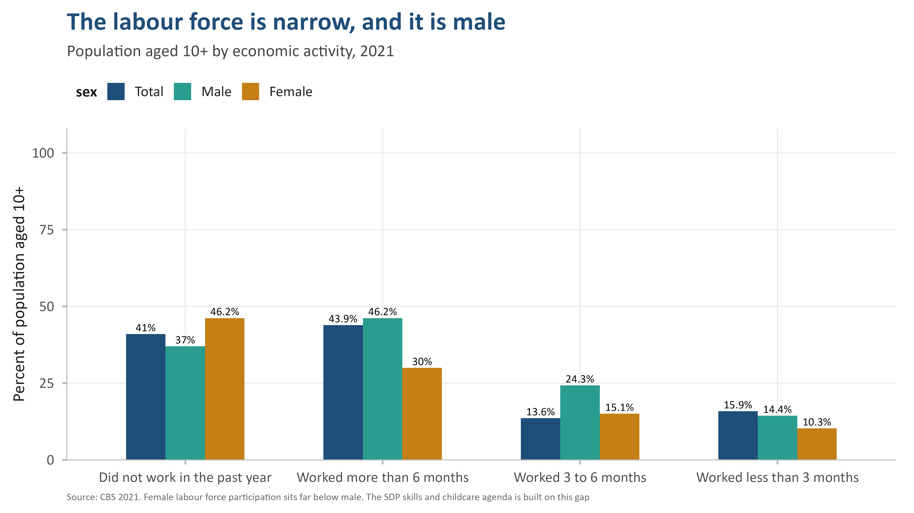
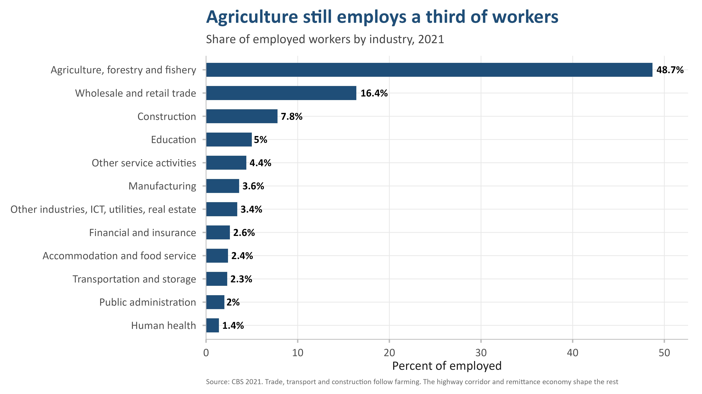
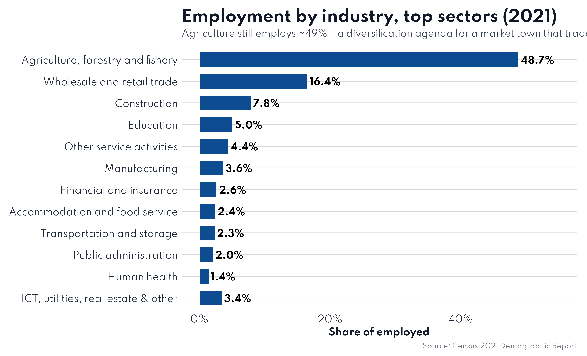
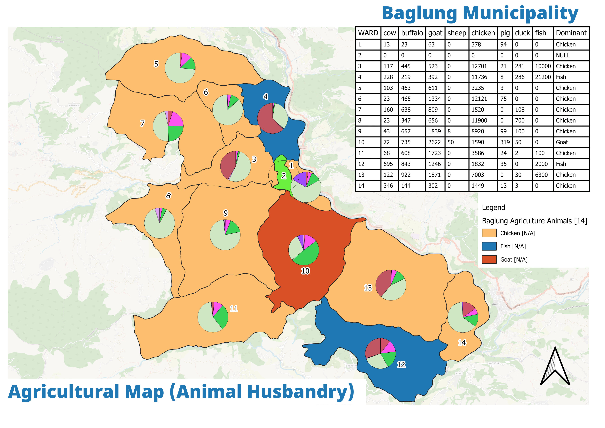

Existing situation
Economic activity by ward and status — the productive-base map the plan builds from.
Trade dominance (1,540 of 2,907 estabs) — the dilemma the diversification objective answers.
Where the 9,320 jobs sit — the base for targeted local economic development.

Plantation geography — the raw material for the cold-chain and agro-cluster programmes.
Livestock distribution underpinning the dairy & meat programme.
A trade economy, concentrated in the core
Baglung's economy is real but shallow: establishment lifetimes, trade dominance and retail concentration in Ward 2 describe a service economy with little manufacturing or agro-processing.

Economic activity

Industry split

Employment by industry
Agriculture plantation

Animal husbandry